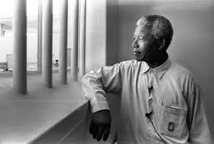

* Para entrar en contexto la liberacion de mandela hay que saber que fue encarcelado por la conspiracion y el sabotaje contra el gobierno.
- Nelson Mandela traiciono al gobierno porque no recibian resultados de todas las ayudas pedidas, entonces con el enfado de no rebir ninguna ayuda decidio ir contra el gobierno.
- En su estancia en la carcel, su reputacion crecio y llego a ser conocido como el lider negro mas importante de Sudafrica.
- Prision de la isla Robben
- Prision de Pollsmoor
- Prision de Victor Verster
- El 11 de febrero de 1990 Mandela salio de la carcel tras estar preso 27 años en condiciones infrahumanas, dando asi un mensaje reconciliatorio con un llamado a los compatriotras blancos para que se unan a configurar un nuevo pais.